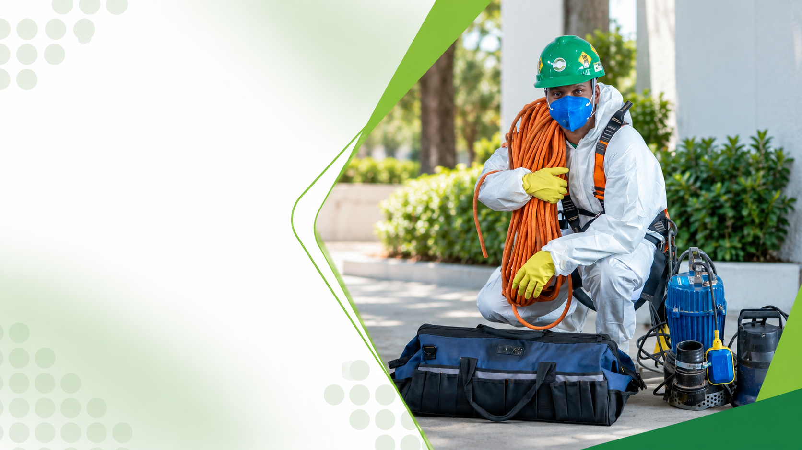

Limpeza de caixa d'água em Franca, SP
Atendimento para residências, condomínios e indústrias em Franca e cidades vizinhas.
Limpeza de caixa d'água em FrancaSaneamento Ambiental de Reservatórios
Garanta água limpa e segura para sua família ou empresa com higienização periódica de reservatórios, técnicos certificados NR33/NR35 e emissão de laudo.
A Bioforte atende residências, condomínios, indústrias, comércios e escolas em total conformidade com a RDC nº 216 da Anvisa e normas de segurança do trabalho.

Entenda o serviço
A higienização de caixas d'água é o procedimento técnico de esgotamento, limpeza mecânica, desinfecção bactericida e enxágue de reservatórios de água potável.
A legislação sanitária (RDC nº 216/2004 da Anvisa) recomenda que a limpeza seja realizada a cada 6 meses. Com o tempo, poeira, lodo, biofilme bacteriano e até pequenos animais podem penetrar no reservatório, comprometendo a potabilidade da água.
A Bioforte executa a higienização com produtos sanitizantes registrados, sem agredir a estrutura do reservatório e com entrega de laudo técnico de conformidade.
Como trabalhamos
Um procedimento padronizado para garantir a pureza da água que você consome diariamente.
Orientamos o cliente a fechar o registro de entrada com antecedência para evitar o desperdício de água potável antes do serviço.
Esgotamento seguro até o nível ideal para a lavagem, com bloqueio da tubulação de saída para impedir que a sujeira desça para os canos.
Escovação das paredes e do fundo com escovas de cerdas macias, sem uso de sabão ou detergentes químicos que deixem resíduos tóxicos.
Aplicação de solução desinfetante registrada na Anvisa na concentração exata recomendada pelos órgãos de saúde.
Esgotamento dos resíduos, reabertura do abastecimento, vedação correta da tampa e emissão de certificado de execução com validade semestral.
Para estabelecimentos comerciais, hospitais e condomínios, a limpeza de reservatórios é parte fundamental do Controle Integrado de Pragas e Saneamento .
Contaminações comuns
A negligência na limpeza semestral transforma o reservatório em foco de contaminação biológica.

Bactérias como Escherichia coli e coliformes fecais proliferam em lodo acumulado no fundo do reservatório.
Mais sobre higienização
Partículas em suspensão decantam e formam uma camada de lodo que altera cor, cheiro e sabor da água.
Mais sobre higienização
Tampas mal vedadas permitem a entrada de pombos, morcegos, baratas e mosquitos da dengue (Aedes aegypti).
Mais sobre higienização
A água parada em reservatórios abertos serve de criadouro imediato para mosquitos transmissores de dengue e zika.
Mais sobre higienizaçãoSinais de alerta
A manutenção preventiva semestral é a garantia de saúde para quem consome a água.
A Organização Mundial da Saúde (OMS) e a Anvisa reforçam: o consumo de água de reservatório sem higienização periódica é uma das principais vias de transmissão de doenças de veiculação hídrica.
Para sua casa
Em casas e sobrados, a caixa d'água frequentemente fica em sótãos de difícil acesso e sem iluminação adequada.
Os técnicos da Bioforte contam com equipamentos portáteis de iluminação, proteção respiratória e ferramentas adequadas para trabalhar com total segurança dentro da sua residência.
Após o serviço, a caixa é lacrada contra a entrada de insetos e poeira.
Fale no WhatsAppPara o seu negócio
Atendimento a cisternas subterrâneas, castelos d'água e reservatórios de grande porte.
Condomínios, indústrias, restaurantes e hospitais necessitam de rigor técnico máximo: equipe com exames ASO em dia, certificações de segurança do trabalho e laudo para apresentação à Vigilância Sanitária e auditorias de qualidade.
Antecipe o problema
A limpeza semestral não é apenas recomendação legal: é um hábito essencial de prevenção à saúde.
Mantenha um cronograma fixo: programar a higienização a cada 6 meses assegura que sua família ou seus clientes jamais consumam água com qualidade comprometida.
Tranquilidade
Trabalhar dentro de reservatórios ou em caixas suspensas envolve sérios riscos ocupacionais de asfixia e quedas. Jamais contrate mão de obra sem qualificação.
Todos os operadores da Bioforte possuem certificação válida na NR33 (Segurança e Saúde nos Trabalhos em Espaços Confinados) e NR35 (Trabalho em Altura).
Utilizamos detector multigás quando exigido, sistema de ventilação mecânica insuflada e linha de vida com trava-quedas.
Procedimento 100% seguro para a estrutura do seu imóvel e para a integridade de nossos técnicos.
Nossa autoridade
Tradição, responsabilidade técnica e documentação completa.
Há mais de 30 anos cuidamos da água e do ambiente de milhares de famílias e empresas no interior de São Paulo, Minas Gerais e Paraná.
Atendimento regional
Atendimento para residências, condomínios e indústrias em Franca e cidades vizinhas.
Limpeza de caixa d'água em FrancaHigienização de caixas e reservatórios para clientes residenciais e corporativos em Ribeirão Preto.
Limpeza de caixa d'água em Ribeirão PretoServiço técnico para condomínios, empresas e residências em Uberaba e região.
Limpeza de caixa d'água em UberabaHigienização profissional de caixas d'água para lares e empresas em Guarapuava/PR.
Limpeza de caixa d'água em GuarapuavaDúvidas frequentes
A recomendação dos órgãos de saúde pública e da Anvisa (RDC 216/2004) é realizar a higienização a cada 6 meses, tanto em residências quanto em estabelecimentos comerciais e industriais.
Recomendamos fechar o registro de entrada 1 a 2 dias antes para consumir a maior parte da água na rotina normal, deixando cerca de 1 palmo de água no fundo, que será utilizado pelos técnicos para a lavagem.
Nunca. Produtos como sabão, detergente e desinfetantes comuns deixam resíduos químicos que contaminam a água potável. A Bioforte utiliza exclusivamente escovação mecânica e desinfecção com solução clorada em dosagem técnica controlada.
Em residências (caixas de 500 a 1.000 litros), o procedimento leva cerca de 1 a 2 horas. Em condomínios ou indústrias com grandes reservatórios, o tempo varia conforme a capacidade e o número de células.
Sim. Ao final do serviço, emitimos o Certificado de Execução de Limpeza e Higienização com validade de 6 meses, com indicação dos produtos utilizados e assinatura do responsável técnico.
Sim. Nossa equipe é 100% certificada nas normas NR33 (Espaços Confinados) e NR35 (Trabalho em Altura), com todos os equipamentos de proteção e salvamento necessários.
Sim, assim que a caixa encher novamente com a água fornecida pela rede pública, a água já estará própria para consumo, pois todo o desinfetante é devidamente esgotado no enxágue.
Entre em contato conosco informando a capacidade aproximada da caixa (ou quantidade de caixas), o tipo de imóvel e a sua cidade. Elaboramos a proposta rapidamente.
Não coloque a saúde de quem você ama em risco. Garanta água pura e protegida com laudo técnico e equipe certificada.
A Bioforte realiza orçamentos rápidos e agendamento pontual para sua casa, condomínio ou empresa.
Fale no WhatsAppFranca • Ribeirão Preto • Uberaba • Guarapuava
Continue explorando

Prevenção e controle de insetos e aracnídeos urbanos, como baratas, formigas e aranhas.
Conhecer o serviço
Erradicação e prevenção de roedores, como camundongos, ratazanas e rato de telhado.
Conhecer o serviço
Controle de cupins de madeira seca e de solo para proteger móveis e estruturas.
Conhecer o serviço
Ações preventivas e corretivas contínuas para impedir a proliferação de pragas.
Conhecer o serviço
Afastamento técnico de pombos com barreiras físicas e manejo sem crueldade.
Conhecer o serviço